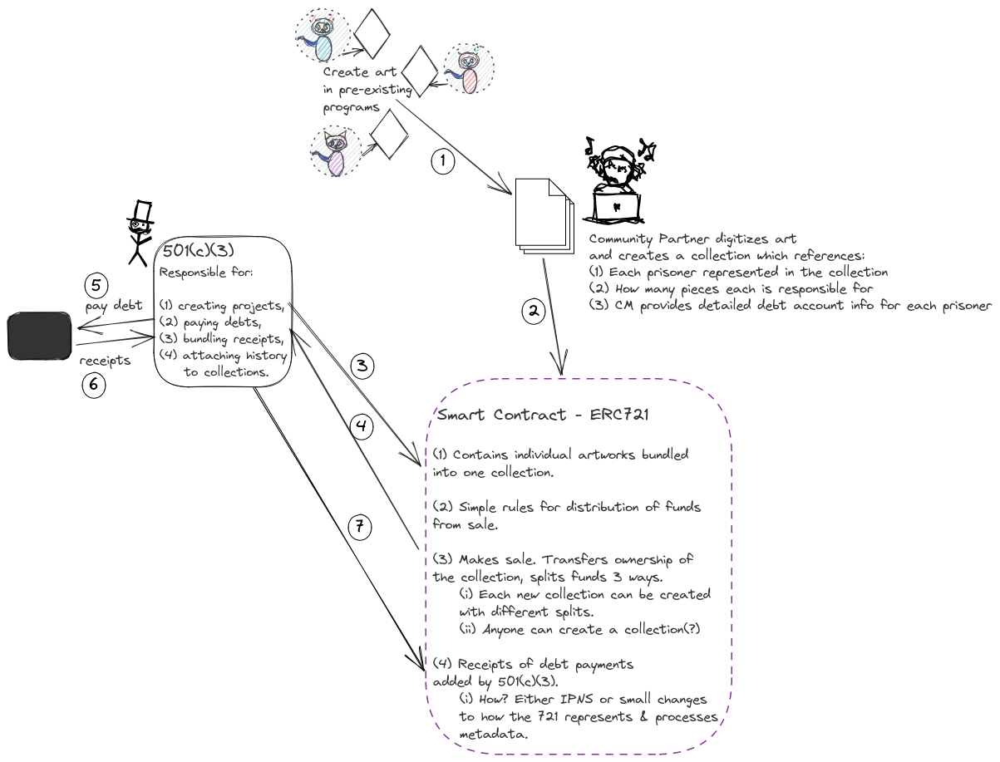

Diving Deeper
"This artwork isn't out to make an overtly political statement. Like all good art, it organises elements in the world around it in order to make an audience see and feel in a new way."
We believe we can use public, programmable, transparent flows of value in order to cultivate compassion. We don't wish to establish a new world order: if we make a genuine and felt difference the life of just one person, that will be enough. If we illustrate the kinds of collective economic storytelling practices required to create new systems of restorative justice, then it will be a dream come true.
Supporting Research
Incarcerated Artists Are Making Some of Today’s Most Important Art
Nicole R. Fleetwood’s powerful new book explains why.
How Prison Art From Texas Captured the Art World’s Attention
Paños, small cloth swatches decorated with detailed illustrations by inmates, now hang in New York museums and are snapped up by worldly collectors.
‘I never thought so many people would read my words’
A Florida exhibition of letters, poetry and drawings by inmates aims to shed light on the realities of mass incarceration